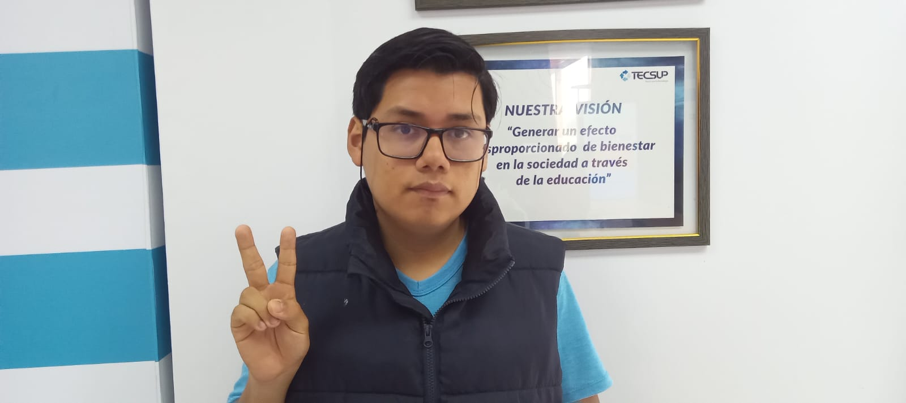

Quiénes Somos

Marco Nurena Asencio, estudiante de Tecsup, 2do ciclo de la carrera Diseño y Desarrollo de Software.
Mauricio Brad Wilson, estudiante de Tecsup, 2do ciclo de la carrera Diseño y Desarrollo de Software.
Felix Diaz Bernabe, estudiante de Tecsup, 2do ciclo de la carrera Diseño y Desarrollo de Software.
Grissel LLican Correa, estudiante de Tecsup, 2do ciclo de la carrera Diseño y Desarrollo de Software.
Josefina Grado Reyes, estudiante de Tecsup, 2do ciclo de la carrera Diseño y Desarrollo de Software.

Anderson Guevara Benites, estudiante de Tecsup, 2do ciclo de la carrera Diseño y Desarrollo de Software.